Coude
Cas Clinique 4
Traumatisme fermé du coude gauche, chez une enfant de 6ans, suite à une chute de sa hauteur.
L’examen a trouvé une tuméfaction du coude, un élargissement antéro-postérieur, une impotence fonctionnelle du membre et un examen vasculo-nerveux sans anomalies.
La radiographie faite, a montré (fig1, fig2)
Réponse 1
Fracture supra-condylienne gauche stade IV par mécanisme en extension.
Réponse 2
Réduction orthopédique, avec fixation par deux broches selon la technique de JUDET. Immobilisation plâtré pendant 45j (fig4).
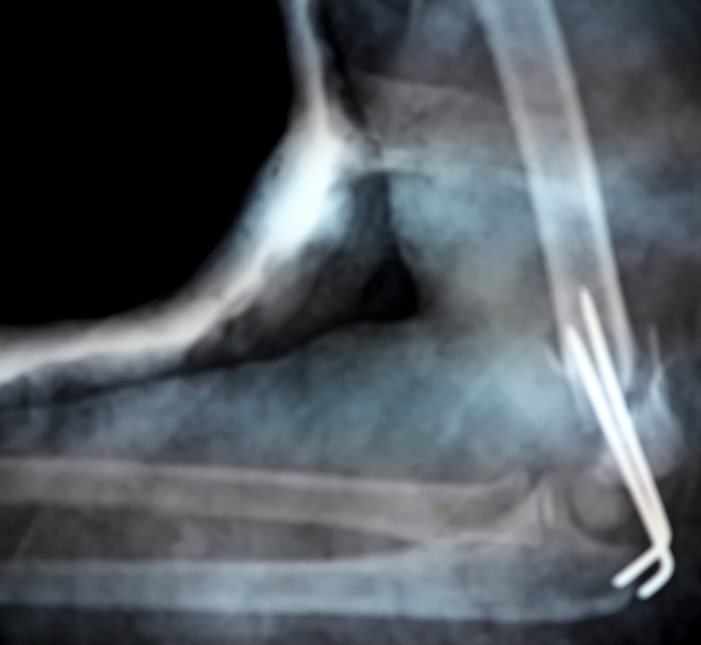
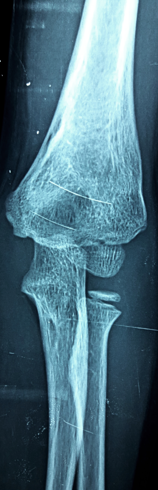
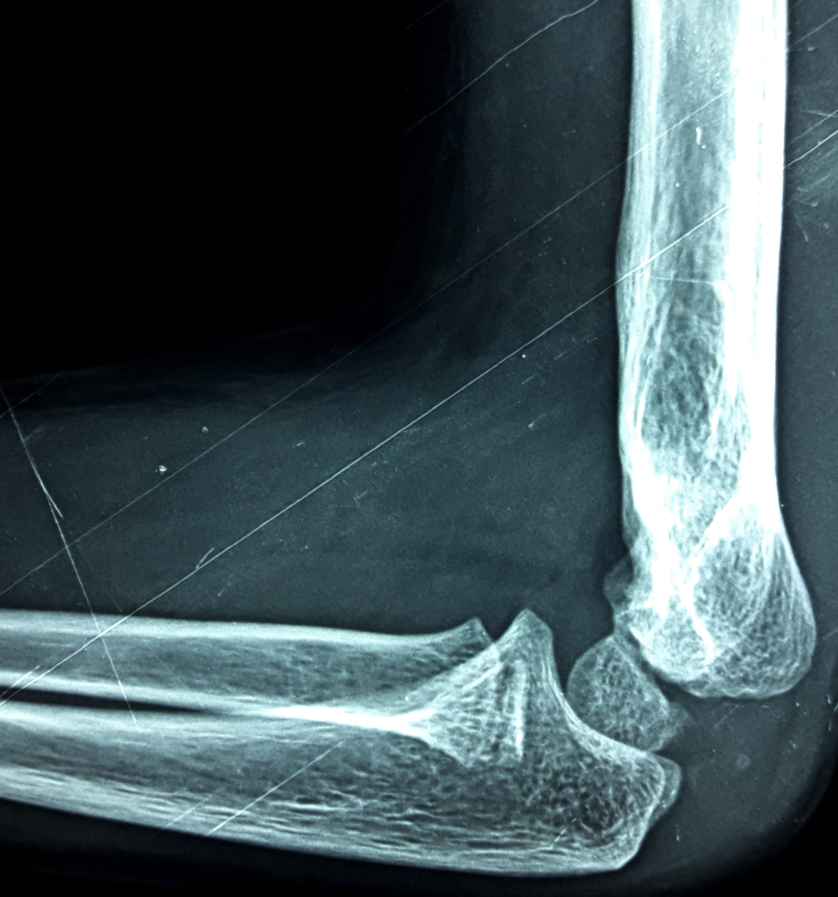
Réponse 3
Les complications à redouter sont:
✔ la lésion vasculaire
✔ l’ouverture cutanée (fig7)
✔ la lésion du nerf inter-osseux antérieur
✔ la lésion du nerf médian
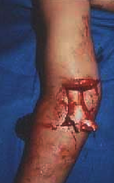
Réponse 4
- Hospitalisation en urgence et prise de voie veineuse.
- Traitement antibiotique mis en route immédiatement par voie veineuse avec une bithérapie large ciblant le staphylocoque (pénicilline M de type flucloxacilline) et un aminoside.
- Immobilisation plâtrée en parallèle au traitement antibiotique, mise en place d'un plâtre cruro-pédieux fenêtré en regard de la métaphyse distale du fémur.
La prise en charge sera :
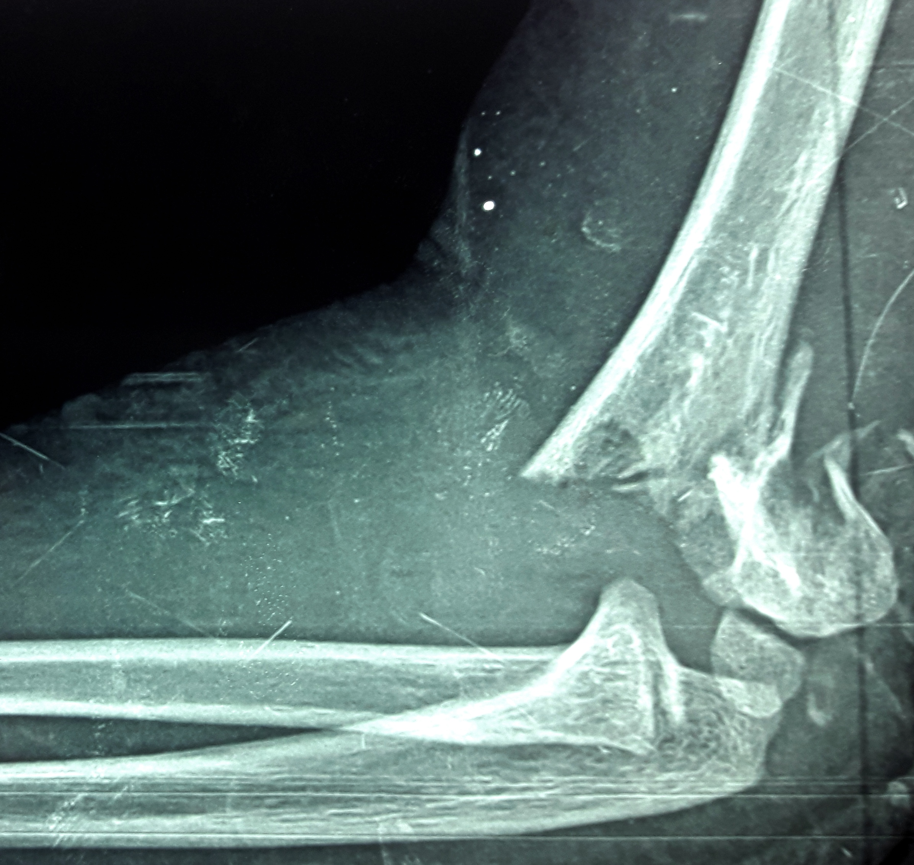
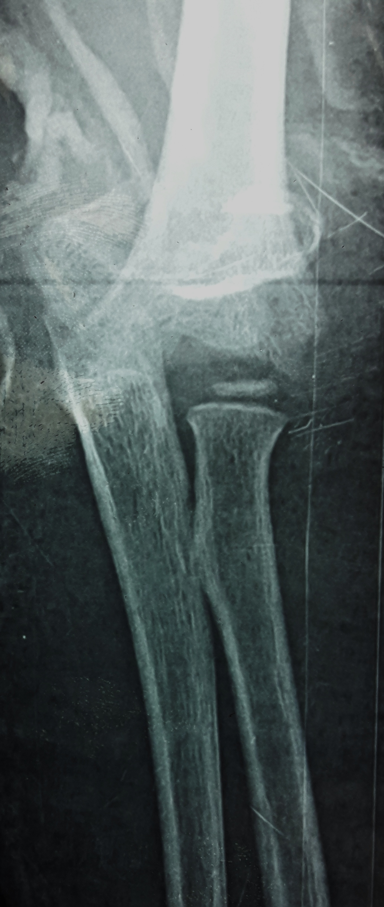
Commentaire 3
Les complications vasculo-nerveuses sont à rechercher systématiquement. Les pouls doivent être palpés afin d’éliminer une lésion de l’artère humérale (fig8).
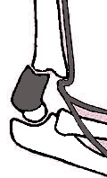
L’examen nerveux doit être effectué à la recherche de lésion du nerf radial et médian qui sont fréquentes dans les fractures avec mécanisme en extension (fig9, fig10). La recherche d’une atteinte nerveuse doit être rigoureuse. Elle se fait de la manière suivante:
nerf radial:
✔ mobilité: la flexion dorsale du poignet et l’extension des métacarpo-phalangiennes.
✔ sensibilité de la tabatière anatomique, zone sensitive privilégiée du nerf radial
nerf médian:
✔ mobilité: effectuer la flexion superficielle des doigts,
✔ sensibilité des pulpes du 2eme, 3eme et moitié externe du 4ème doigt
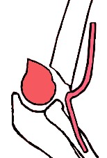
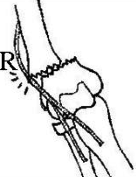
Pendant l’examen neurologique, il ne faut pas omettre de contrôler la fonction du nerf interosseux antérieur, en exécutant la pince pouce-index (fig11, fig12). Une lésion du nerf interosseux antérieur est probablement l’atteinte neurologique la plus fréquente des fractures supra-condyliennes, mais malheureusement la plus méconnue.
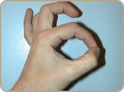
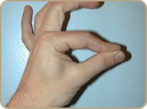
Le bon pronostic des atteintes nerveuses incomplètes semble rendre licite l’abstention chirurgicale.
En cas de paralysie complète du nerf médian ou du nerf radial, une exploration chirurgicale précoce ( dans la première semaine post-traumatique) doit être faite.
Le traitement des fractures supra-condyliennes est une urgence. L’œdème est rapide au niveau du coude et la fracture est plus facile à réduire lorsque l’œdème est encore faible.
Commentaire 1
Les fractures en extension sont classées, selon LAGRANGE et RIGAULT, comme suit (fig3):Fracture en extension:
• stade I : uniquement la corticale antérieure est rompue, non déplacée
• stade II : fracture des 2 corticales, bascule postérieure pure, le périoste postérieur reste toujours intact
• stade III: dès qu'il y a une rotation ou une translation, mais les 2 fragments restent en contact l'un avec l'autre
• stade IV: déplacement complet, il n'y a plus de contact entre les fragments

Références
Babal JC, Charles BS, Mehlman T,et Guy Klein BS. SNerve Injuries Associated With Pediatric Supracondylar Humeral Fractures: A Meta-analysis.
J Pediatr Orthop 2010;30:253-63.Hasler C. Supracondylar fractures of the humerus in children.
European J Trauma 2001;27:1-15Marquis CP, Cheung G, Dwyer J, Frederick D, Emery G. Supracondylar fractures of the humerus.
Current Orthopaedics 2008;22:62-69.Lahyaoui L.. Les fractures supracondyliennes de l’humérus chez l’enfant (à propos de 370 cas)
Thèse de médecine Fès 2010,n°74.